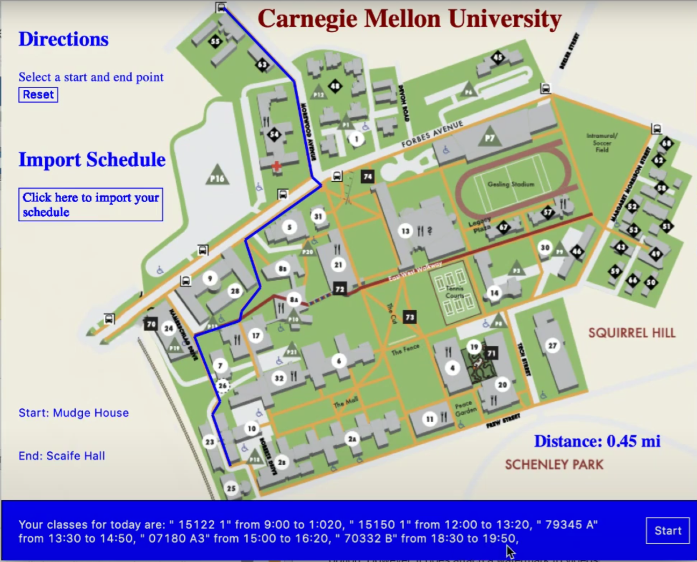

Carnegie Mellon Map Project
Description
This project is a map application specifically restricted to Carnegie Mellon’s main campus. This application can be used by any member of the Pittsburgh or Carnegie Mellon community to optimally route directions from location to location in campus. A special feature added for students is the ability to import one’s schedule (.ics file) and be able to route paths from class to class based on the classes for the current day. The user will also see the distance in miles from the path of two locations.